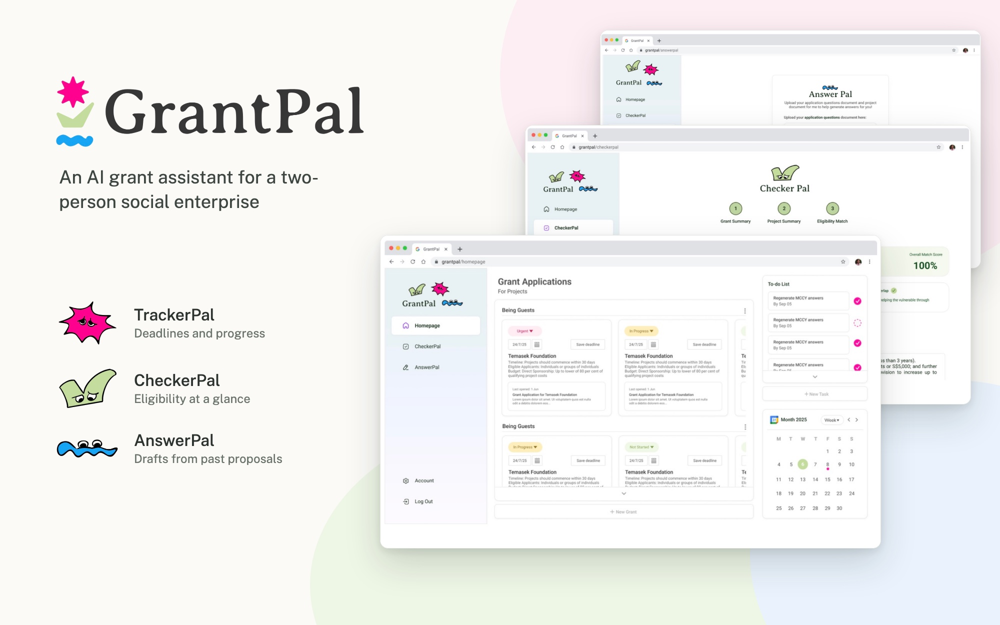
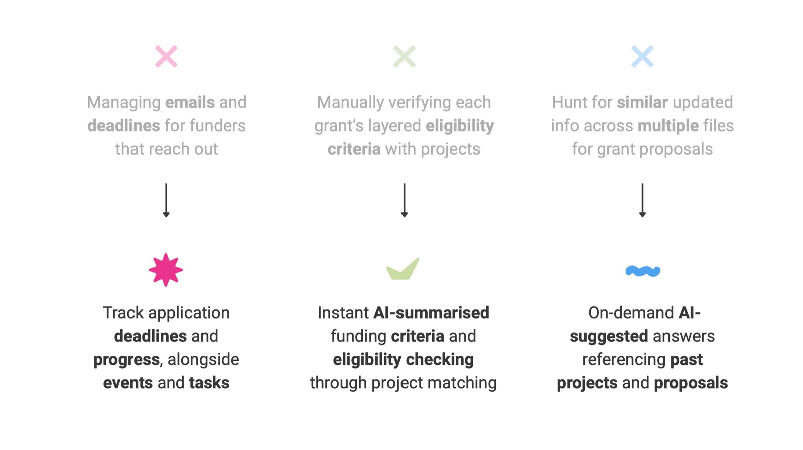
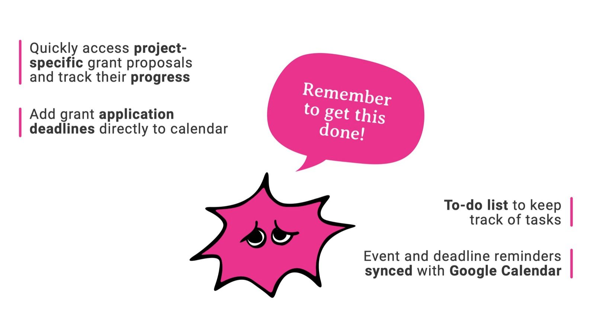
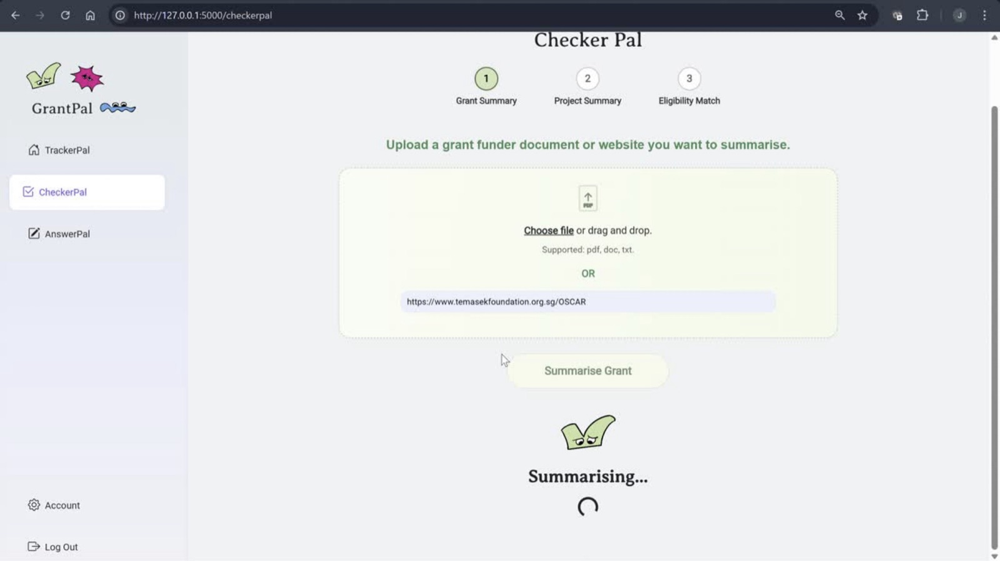
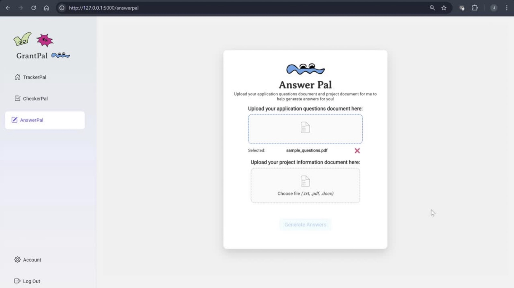
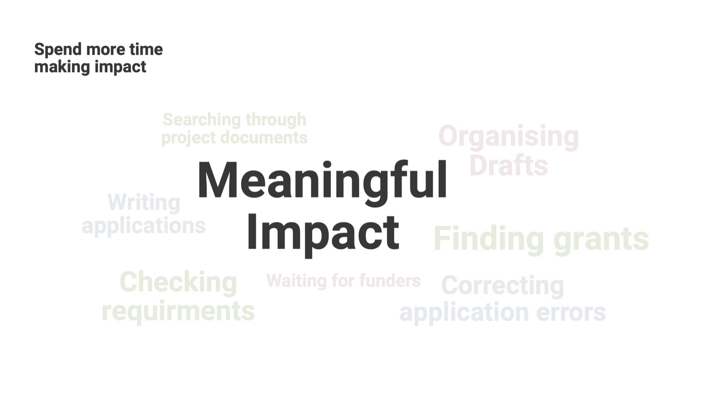

The problem
Two people, a lot of paperwork
BeingBridges runs projects that bring people of different cultures, races and faiths together, like a card game for conversations about diversity and virtual visits to places of worship. It's run by two people, and it applies for grants to fund its projects.
Each grant restarted the same cycle. They tracked funder emails and deadlines by hand, checked every grant's layered eligibility rules against each project, and hunted through old files for answers to questions that every funder asked in a slightly different way. When an application was rejected, the cycle started again.
How might we help BeingBridges spend less time and fewer resources on grant administration?
Process
We designed for the wrong form first
In the first sprint we mapped their workflow, built a persona and listed the pain points. We took cues from Grammarly, where AI handles the tedious work and the user stays in control. Our first concept was a browser extension that would fill in online grant portals automatically.
Feedback session with the client
Applicants fill in grant forms in online portals.
Funders send questions as a brief or PDF, and applicants draft their answers in Word.
We dropped portal autofill and rebuilt around documents: upload the funder's file and your project files, and get drafts back.
After the pivot, each pain point mapped to one tool. We called them Pals, and gave each one a character so a tiring task would feel a little lighter.

The product
Three Pals
TrackerPal
Keeps every application and deadline in one place.
- Grant cards grouped by project, tagged Urgent, In progress or Not started
- To-do list for the tasks around each application
- Deadlines and reminders synced to Google Calendar

CheckerPal
Answers "are we even eligible?" without reading the whole document.
- Summarizes a funder's PDF, document or web page into its key requirements
- Summarizes the project the same way
- Scores how well the project matches the grant

Try it: CheckerPal
Sample dataPick a project and check it against the grant. The real CheckerPal reads the funder's document with the OpenAI API. Here the grant, the projects and the results are made up, so you can see how it works.
Grant summary
Community Bonds Fund
Up to $20,000 for projects that build understanding across cultures and faiths.
Project
- Run by a registered charity or social enterprise in Singapore
- Builds understanding across races or faiths
- Reaches at least 500 people
- Finishes within 12 months
- Asks for $20,000 or less
–Run the check to see the match.
AnswerPal
Drafts answers from what the team has already written.
- Upload the funder's questions and a project document
- Get a suggested answer for each question
- Regenerate, pick the best version, edit it, and export to Word

Try it: AnswerPal
Sample dataPick a funder question and draft an answer. Regenerate for another version, pick the one you like, then edit it. The drafts here are pre-written. The real AnswerPal writes them from the team's own project documents.
Build
How it works
Uploaded files are size-checked, stored only temporarily and cleaned up afterwards. API keys stay on the server.
What I did as tech lead
- Turned what the client told us into a system architecture and a feature roadmap
- Led the technical work across backend, frontend and AI integration
- Built the React frontend
- Built the AI modules for eligibility analysis and answer drafting with the OpenAI API
- Automated deadline tracking through the Google Calendar API
Outcome
Less admin, more impact
GrantPal runs as a working web app. The searching, checking and drafting that used to be spread across emails and folders now sit in one tool. The same approach would work for any small social enterprise that depends on grants.

Team: Aniag Daena Mitchelle Ocampo (project lead), Loh Jia Le John (tech lead), Natalie Soh Leigh, Lew Xin-En Shannon, Tan Le Yan Rebecca. Mentors: Dr. Ee May Kan, Dr. Yiming Qian.